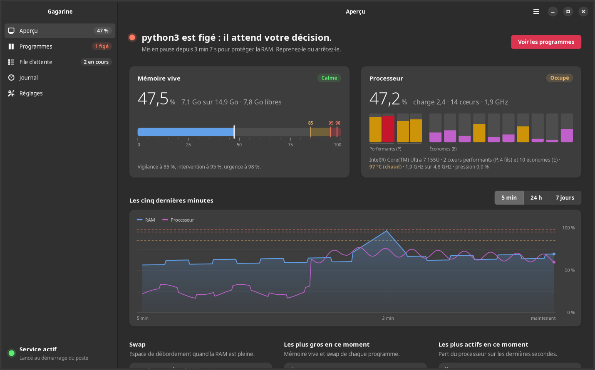
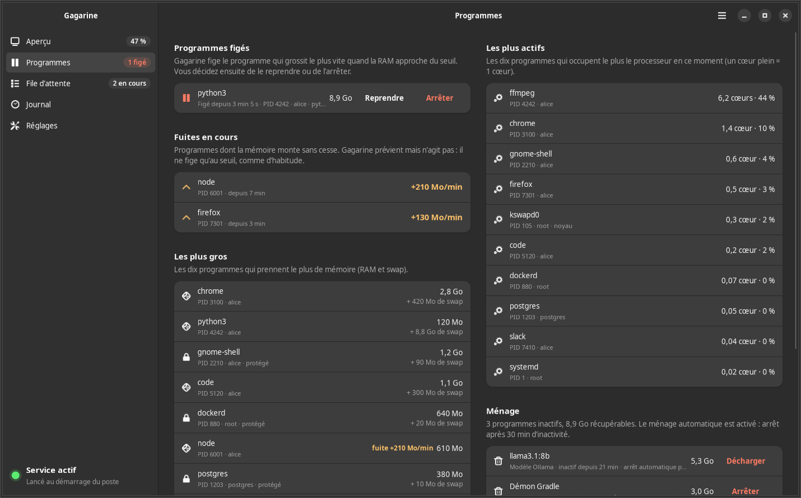
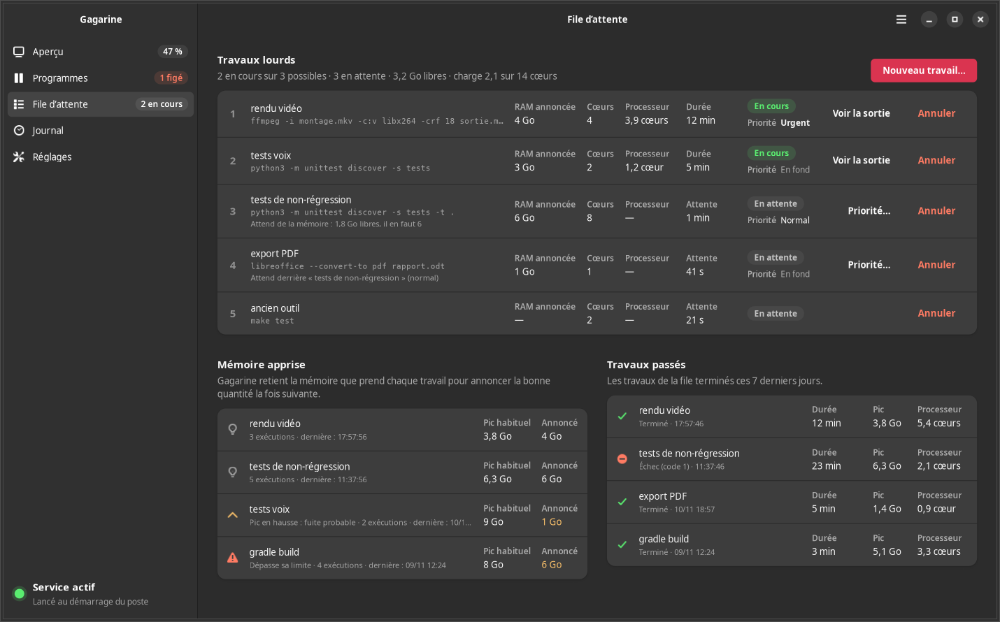
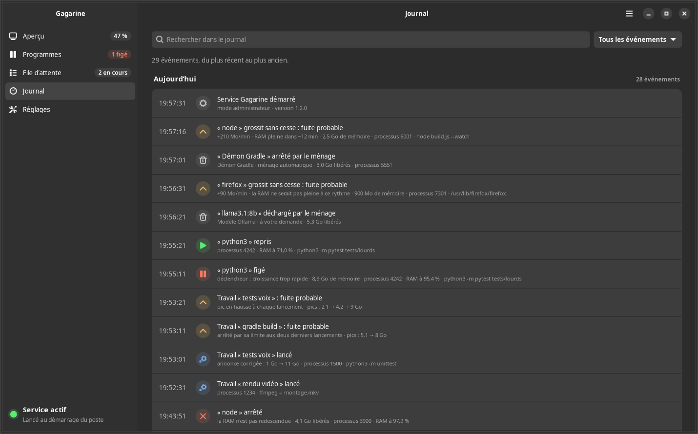
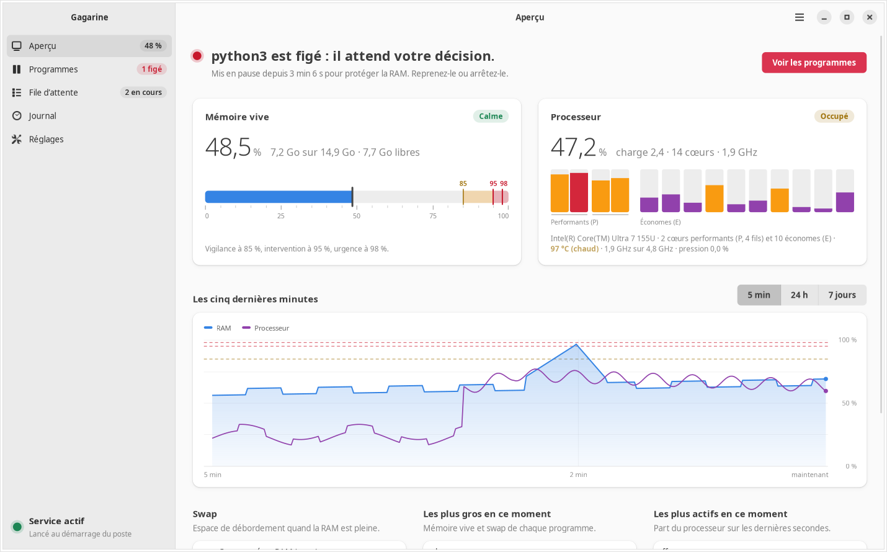

Gagarine
Quand un programme s'emballe et remplit la mémoire, Gagarine le fige avant que le PC ne gèle. Le reste de votre travail continue.
- Il grossit. Un test fuit : 5,6 Go en vingt secondes.
- Figé à 95 %. Mis en pause, rien n'est perdu.
- Rangé dans le swap. Compressé, sa mémoire libère la RAM en une seconde.
- Le poste reste fluide. Une notification propose Reprendre ou Arrêter.
Sur Ubuntu 24.04 :
curl -fsSL https://mawena.github.io/gagarine/installer.sh | sudo shLe script ajoute le dépôt APT signé puis installe le paquet ; les trois commandes qu'il lance sont détaillées plus bas, pour qui préfère les taper soi-même.
Quatre protections, du plus tôt au plus urgent
Avant : les travaux lourds passent par la file
Rendus vidéo, compilations, longues suites de tests attendent que la mémoire et les processeurs suffisent ; plusieurs tournent ensemble quand ils tiennent, chacun dans sa propre limite mémoire. S'il la dépasse, lui seul s'arrête. La file retient la mémoire que chaque travail a vraiment prise, corrige une annonce trop basse, repère un travail qui prend plus à chaque lancement, et dit quand il a fini. Les travaux urgents passent devant.
gagarine file --priorite urgent "rendu vidéo" 4 4 -- ffmpeg -i film.mov film.mp4Rien ne garde la mémoire pour rien
Les démons de compilation restés ouverts et les modèles d'IA chargés sans servir sont arrêtés ou déchargés après une demi-heure d'inactivité. Chaque application du bureau peut recevoir un plafond : au-delà, elle ralentit au lieu de pousser tout le poste à bout.
gagarine applications plafond google-chrome 5Pendant : le garde, chaque seconde
Au-delà de 95 % de RAM, Gagarine fige le programme qui grossit le plus vite, jamais le bureau ni les services du système. Il agit même plus tôt quand ce programme remplirait la mémoire dans les secondes qui viennent, ou quand le système commence à peiner, et il signale un programme qui fuit bien avant qu'il ne pose problème. Il ne l'arrête que si la mémoire ne redescend pas, ou s'il reste figé dix minutes sans décision de votre part.
Sur le poste où il est né : 850 Mo rangés dans le swap en une seconde. Les alertes arrivent sur le bureau et, si vous le voulez, sur votre téléphone.
En réserve : un swap qui ne touche pas le disque
Le paquet ajoute un swap compressé en RAM de la taille de la mémoire. Les pages inutilisées y prennent trois à quatre fois moins de place, et en reviennent en quelques microsecondes. Le swap sur disque reste en dernier recours.
Tout se voit, tout se pilote
L'application Gagarine dit d'abord, en une phrase, si le poste va bien. Elle montre ensuite la RAM, le processeur et le swap en direct ou sur les sept derniers jours : chaque cœur, sa température et sa fréquence, les programmes les plus gros et les plus actifs. Elle montre aussi les programmes figés avec Reprendre et Arrêter, les programmes inactifs à ranger, la file d'attente avec la mémoire et les cœurs de chaque travail, et le journal groupé par jour. Les pages prennent toute la largeur de la fenêtre, en thème clair ou sombre. Un indicateur dans la barre du haut garde la RAM et le processeur sous les yeux. Gagarine n'agit que pour la mémoire : un programme qui occupe tous les cœurs fait son travail, il n'est jamais freiné.





Installer
Pour Ubuntu 24.04 et les distributions Debian équivalentes. Une fois le dépôt ajouté, sudo apt upgrade apporte les nouvelles versions.
-
Ajouter la clé qui signe le dépôt :
sudo curl -fsSLo /usr/share/keyrings/gagarine.gpg https://mawena.github.io/gagarine/apt/gagarine.gpg -
Ajouter le dépôt :
sudo curl -fsSLo /etc/apt/sources.list.d/gagarine.sources https://mawena.github.io/gagarine/apt/gagarine.sources -
Installer :
sudo apt update && sudo apt install gagarine -
Vérifier que tout marche, sans risque : un programme d'essai grossit, il doit être figé, rangé dans le swap puis arrêté.
sudo gagarine essai
Sans le dépôt : téléchargez le paquet .deb et sa somme de contrôle sur la page de la dernière version, puis sudo apt install ./gagarine_*_all.deb.